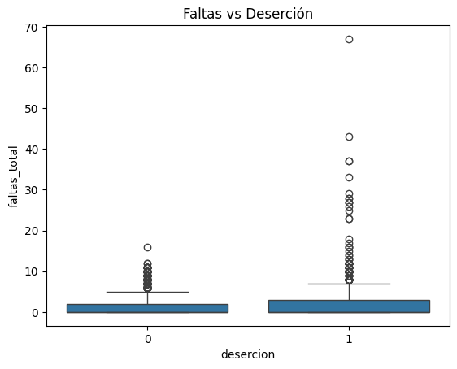
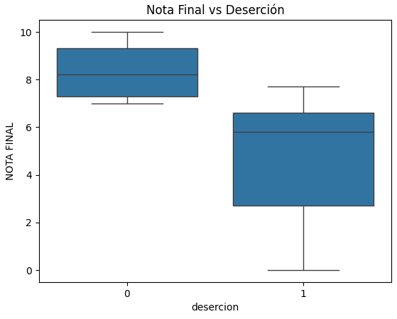
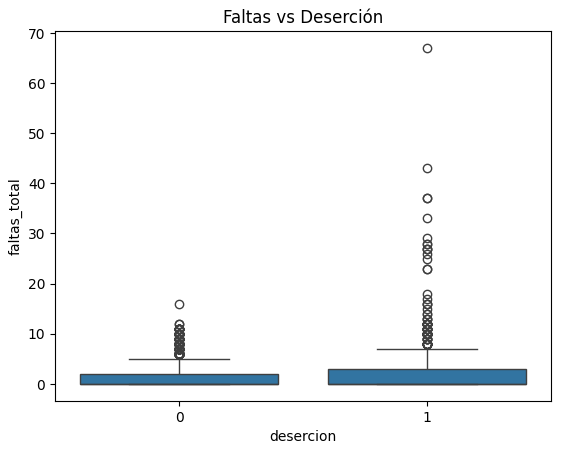

Visualización de Datos
Problema del dominio: Se analiza la deserción estudiantil como el abandono académico en educación superior.
Datos y tareas: Se utilizan variables como nota final, faltas, aprobado y retirado para identificar patrones.
Representación visual: Se emplean gráficos como boxplots para comparar grupos.
Diseño visual: Se organiza la información en forma de narrativa basada en preguntas analíticas.
La deserción estudiantil afecta la permanencia académica.
Identificar factores permite mejorar estrategias educativas.
Datos académicos de estudiantes.
| Nota | Faltas | Deserción |
|---|---|---|
| 8.5 | 5 | 0 |
| 4.2 | 20 | 1 |
| 7.1 | 8 | 0 |
Carga del dataset: se importaron los datos.
Exploración: se revisaron variables.
Eliminación: se quitaron datos personales.
Limpieza: se corrigieron errores.
Deserción: variable creada.
Faltas_total: suma de faltas.

Interpretación: Menor nota implica mayor deserción.

Interpretación: Más faltas implican mayor abandono.

Interpretación: Se observa la distribución de estudiantes que desertan.